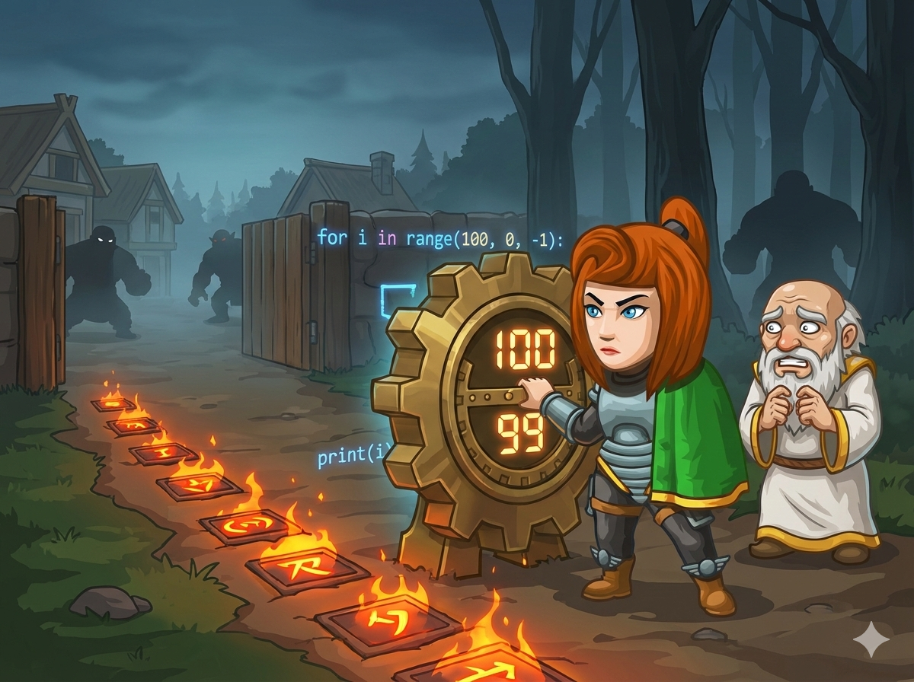

食人魔大军压境，村庄危在旦夕！英雄站在城门前，准备启动最强大的“火焰陷阱”。
这个陷阱有一个严格的启动规则：
👉 任务： 编写一个程序，输出从 100 到 1 的所有整数，每行一个。
这次我们要使用 While 循环 来实现倒计时。想象它是一个“只要...就...”的魔法指令。
While 循环的三大步骤：
使用 while 循环，别忘了在花括号里把 i 减 1。
#include <iostream> using namespace std; int main() { // 1. 初始化：从 100 开始 int i = 100; // 2. 条件：只要 i 大于等于 1，就继续 while (i >= 1) { cout << i << endl; // 输出数字 // 3. 更新：非常重要！每次减 1 i--; } return 0; }
使用 while 循环，必须手动写代码让 i 变小。
# 1. 初始化：从 100 开始 i = 100 # 2. 条件：只要 i 大于等于 1，就继续 while i >= 1: print(i) # 输出数字 # 3. 更新：非常重要！每次减 1 # 如果忘了这行，程序会永远停在 100 (死循环) i = i - 1